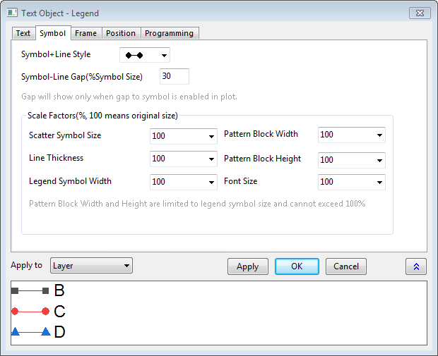
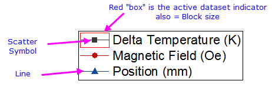

Die Registerkarte Symbol (Eigenschaften des Textobjekts)
TextOb-Prop-Symbol-tab
- 
Die Diagrammlegende ist einfach ein spezielles Textobjekt. Wenn es sich bei dem Textobjekt um eine Diagrammlegende handelt, wird die Registerkarte Symbol zum Dialog Textobjekt hinzugefügt.
Stil von Symbol + Linie
Verwenden Sie für Linien- und Symboldiagramme dieses Bedienelement, um zu bestimmen, welcher Linien- und Symbolstil in der Legende verwendet werden soll.
Abstand Symbol-Linie (% Symbolgröße)
Wird auf Linien- und Symboldiagramme angewendet. Fügt einen Abstand zwischen der Linie und dem Symbol im Legendeneintrag hinzu. Der Abstand zum Symbol muss auf der Registerkarte Linie des Dialogs Details Zeichnung aktiviert sein, damit dies funktioniert.
Skalierungsfaktoren (%, 100 entspricht der Originalgröße)
Sie können bei diesen beiden Kombinationsfeldern aus der Auswahlliste wählen oder eine Zahl in das Feld eingeben. Beachten Sie, dass die Kennzeichnung des aktiven Datensatzes eingeschaltet werden kann, so dass die maximale Höhe und Breite des Symbolblocks gezeigt werden (auf Grafikebene des Dialogs Details Zeichnung oder indem Sie mit der rechten Maustaste auf die Legende klicken und Legende: Aktiven Datensatz kennzeichnen wählen).
-
- 
| Punktsymbolgröße |
- In das Feld können Zahlen größer als 100 eingetragen werden.
- Die Symbolgröße ist durch die Textgröße der Legende beschränkt (Registerkarte Text). Durch Vergrößern der Schrift können größere Symbole verwendet werden.
- Wird auf Linien- und Symboldiagramme sowie Punktdiagramme angewendet.
|
| Liniendicke |
- In das Feld können Zahlen größer als 100 eingetragen werden.
- Wird auf Linien- und Symboldiagramme sowie Liniendiagramme angewendet.
|
| Symbolbreite der Legende |
- In das Feld können Zahlen größer als 100 eingetragen werden. Wenn sie 100 ist, folgt die tatsächliche Breite der Einstellung auf der Registerkarte Legende/Titel im Dialog Details Zeichnung.
- Dieses Bedienelement wird verwendet, um die Breite des aktiven Datensatzindikators anzupassen. Die interne Blockbreite ist begrenzt auf die Größe des aktiven Datensatzindikators der Legende.
- Durch Vergrößern des Legendentexts (Registerkarte Text) nimmt die Höhe/Breite des aktiven Datensatzindikators zu.
- Wird auf Diagrammtypen angewendet, die ein Legendensymbol im Blockstil wie z. B. Säulen-/Balken- und Flächendiagramme und auch Linie+Symbol- und Liniendiagramme verwenden.
|
| Musterblockbreite |
- In das Feld können keine Zahlen eingegeben werden, die größer als 100 sind.
- Sobald der aktive Datensatzindikator eingerichtet ist, können Sie dieses Bedienelement verwenden, um die interne Blockbreite anzupassen. Wenn sie kleiner als 100 ist, befinden sich Lücken vor und nach dem Block, innerhalb des Indikators.
- Wird auf Diagrammtypen angewendet, die ein Legendensymbol im Blockstil wie z. B. Säulen-/Balken- und Flächendiagramme und auch Linie+Symbol- und Liniendiagramme verwenden.
|
| Musterblockhöhe |
- In das Feld können keine Zahlen eingegeben werden, die größer als 100 sind.
- Sie können dieses Bedienelement verwenden, um die interne Blockhöhe anzupassen. Wenn sie kleiner als 100 ist, befinden sich Lücken vor und nach dem Musterblock, innerhalb des Indikators.
- Wird auf Diagrammtypen angewendet, die ein Legendensymbol im Blockstil wie z. B. Säulen-/Balken- und Flächendiagramme und auch Linie+Symbol- und Liniendiagramme verwenden.
|
| Schriftgröße |
- In das Feld können keine Zahlen eingegeben werden, die größer als 100 sind.
- Sie können dieses Bedienelement verwenden, um den Faktor der Schriftgröße anzupassen. Wenn die Schriftgröße auf der Registerkarte Text auf 18 gesetzt ist, legen Sie den Faktor der Schriftgröße mit 50 fest. Dann wird die Schriftgröße in 9 angezeigt, während die tatsächliche Schriftgröße noch immer 18 ist (auf der Registerkarte Text oder im Feld des Tooltipps).
|
Anwenden auf
Die benutzerdefinierten Anpassungen im Dialog des Legendenobjekts werden auf anderen Legendenobjekte angewendet. Beachten Sie, dass einige Legendenanpassungen, wie diejenigen, die Sie auf den Registerkarten Text oder Programmierung vorgenommen haben, können nicht auf andere Legendenobjekte angewendet werden.
| Layer |
Wird nur auf den aktuellen Layer angewendet. Beachten Sie, dass der Layer unterstützt nur ein einzelnes Legendenobjekt. |
| Fenster |
Wir auf alles im Fenster (Seite) angewendet. |
| Ordner |
Wird auf alles im aktuellen Projektexplorer-Ordner angewendet. |
| Projekt |
Wird auf alles in der aktuellen Projektdatei angewendet. |